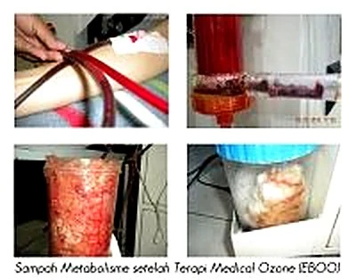
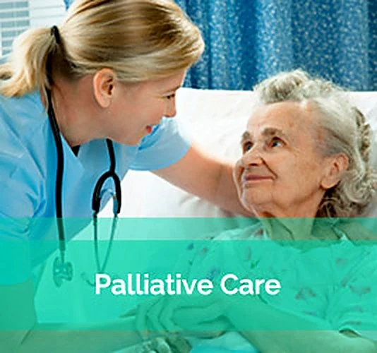

Palliative Complementary
Perawatan paliatif adalah bagian dari ilmu kedokteran yang merawat pasien stadium akhir kanker, jantung, stroke, dan asma secara holistik.
Unduh brosur Q-Life Klinik PDFEdukasi kesehatan
Artikel seputar terapi komplementer, Medical Ozone, dan perawatan paliatif dari tim Q-Life Klinik.

Terapi Medical Ozone menggunakan Ozone (O₃) dosis tertentu bersama O₂ yang dimasukkan ke tubuh untuk mempercepat penyembuhan.
Baca selengkapnya →
Perawatan paliatif adalah bagian dari ilmu kedokteran yang merawat pasien stadium akhir kanker, jantung, stroke, dan asma secara holistik.
Unduh brosur Q-Life Klinik PDF
Dari injeksi minor hingga EBOO: memahami perbedaan jalur pemberian terapi Ozone sebelum konsultasi.
Unduh brosur Q-Life Klinik PDF
Bio, psiko, sosio, dan spiritual: bagaimana Q-Life menyelimuti pasien dari penderitaan secara menyeluruh.
Mengapa kecantikan yang berangkat dari dalam tubuh lebih tahan lama daripada hasil instan.
Tim kami siap menjawab dan mendampingi kebutuhan perawatan Anda.